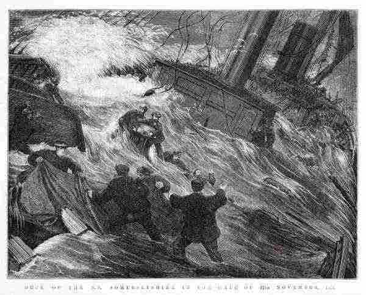

The Somersetshire Gale

| MIME type | image/jpeg |
Narrative
Title DECK OF THE S.S. SOMERSETSHIRE IN THE GALE OF 17TH NOVEMBER, 1873.
Creator
Subject
Description Shows water sweeping across the decks of the ship during a storm.
Description Wood engraving published in The illustrated Australian news for home readers.
Description Title printed below image l.c.
Description Monogram of Samuel Calvert engraved in image l.r.
Publisher State Library of Victoria
Format text/html
Format image/jpeg
Managed by
Collection or series IsPartOf Illustrated newspaper file. Illustrated Australian news for home readers
Date or place April 20, 1874.
Rights
References
| 1. Immigration of Moses Henry Griffin |
| 2. Immigration of Jane Edwards |
| 3. Griffin, Moses Henry |
| 4. Edwards, Jane |